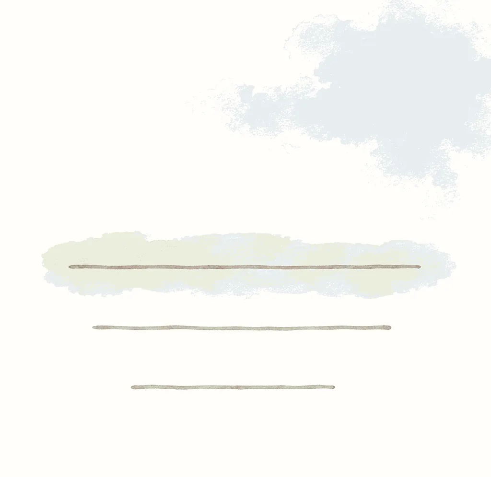
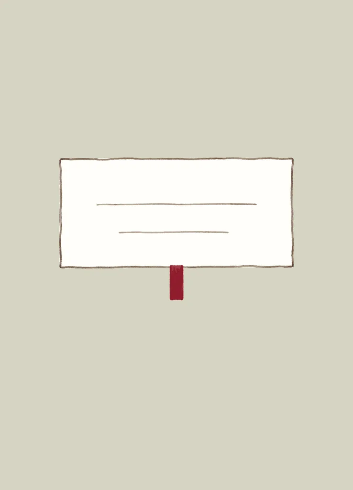
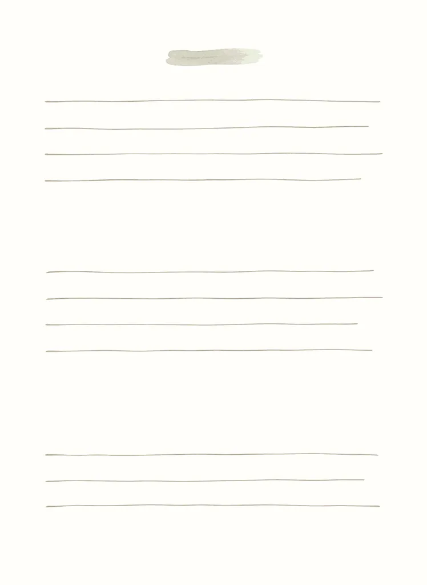

做网站的方法
首页没放下的审美原则，加上验收的做法：屋主三台设备、每档查什么、先量后截图、七条防假信号、测试不出声、文档同一轮改。每条旁边一块小模拟，全在页面里算，不开浏览器、不发请求。
其余审美原则
总览放了十条（两种气质、偏软偏轻、审美优先于对比度、要好看不要更紧凑、等比放大、首页净增为零、真线条图标、暖靠冷底、留白对称、先做出来），这里是其余的。「只升级已有交互、不为套组件造新功能」见交互页那一条。
正对你的东西要端正；形状怪的不要
选卡台正中那张永远rotate 0、最大最近；两侧侧立让位。卡集的球形选卡就是因为正对的那张跟着球面歪着被否，改成Cover Flow。
演示同样七张示例卡，左右键或按钮换中间那张。切到「球形选卡」看正对你的那张：它跟着球面倾着。
正中第4张：rotateX 0°、rotateY 0°，端正。
数值
/* card 画廊 Cover Flow（gallery.js 按舞台尺寸算） */
正中一张：rotate 0，最大最近（宽 .50H）
两侧：rotateY ±60° 后退、等距重叠（宽 .44H），越远越暗到 .45
透视2.2H、透视原点正中；切换380ms 苹果 ease，减弱动效直接切
用在哪
card画廊的选卡台（替代转盘、球两档）；中间卡上下留白对称、倒影住在下边距里，见总览留白对称那条。
为什么
你正对着看的那一张是注意力所在，它歪一点就整个不对劲；球形排布让每张都带着曲面的倾角，正中那张也不例外。Cover Flow把「歪」全留给两侧让位的卡，正中永远端正。按card当时球档几何画的球和Cover Flow并排在否掉的方向「球形选卡」，两边都能拖。
「我发现这些卡片正对我们的时候有一点倾斜，并且有一个球感觉很奇怪，你想想有没有别的更合适的方法来总的展示」
出处：tools/card/CLAUDE.md:160「画廊的几条硬约束」、:161、:162、:174；原话：控制室会话记录（2026-09-23 02:29）；memory/ysevan-workspace-map.md:19「否掉球形选卡」记的「正对的卡歪、球看着怪」是转述。演示里的倾角、半径是示意，不是card的原数。
转场用站点自己的语言，不引入新物件
小屋换页先做过两版门（实心双开门、纸色格心门），都被否；定稿是水彩的「洇一层纸」：纸色水痕从中央洇开盖住画面，在纸下面切页，水干了褪去。
演示选一种转场，点「换一页」。前两种是被否的门（示意），第三种是「洇一层纸」的轻量示意，不是原物（原物的曲线与时长见动画章「洇一层纸」）。
洇一层纸：用的是小屋自己的水彩——纸、水痕、颜料边，没有多出一件东西。
三版
- 实心双开门：门板是色块色（昼橄榄 / 夜青黛）＋把手＋中缝发丝线；合门0.45s藏住路由加载，开门0.75s透视外摆。被否。
- 纸色格心门：纸色门板＋双圈发丝线格心＋黄铜圆钮。被否。
- 洇一层纸：纸色水痕带颜料边从中央洇开、纸下切路由、水干褪去；只动scale与opacity，走合成器。定稿。
为什么
门是新造的物件：它要自己的材质、把手、开合逻辑，站里别处都没有它；水彩洇纸是小屋本来就在说的话（画是水彩、底是纸），转场只是把这句话说一遍。以后加任何「过场」，先问它借的是不是这个站自己的东西。两扇门按当时提交里的原值重演在否掉的方向「换房间的门」。
用在哪
小屋换页（page-veil.tsx与xw-veil样式）。工具类的切页是另一种语言：正文淡入上移8px、侧栏不动，见动画章「切页进场」。
出处：控制室记录 memory/ysevan-web-state.md:53「门升级为实体双开门」、:54「纸色格心门」、:55「转场定稿」
他画的就是风格，不算占位
屋主的手绘稿少色、几笔线，看着像没画完——那是风格。照原样用，不「补全」、不换成更满的图，也不在评审里标「待换图」。
演示三张是屋主真画稿（工具架3D文具上的纸面）。切到「当成占位」看会丢掉什么（示意）。

占位图 · 待换刷刷 · 闪卡正面

占位图 · 待换岗岗 · 封面

占位图 · 待换岗岗 · 内页a
原样：三张都是屋主画的，少色、几笔线——这就是小屋的手作气质。
用在哪
小屋工具架的3D文具：刷刷五张闪卡正面、岗岗封面和八个纸面（按a–d四张循环；没有背面、书脊的就用素纸 / 素橄榄），海报也按画稿重渲。
为什么
「少」是画的一部分：手作气质靠的就是这点不满。拿「看起来没画完」当理由去补色、补细节，或者换成生成的满图，等于把屋主自己那只手从站上拿掉。拿不准是不是占位，问一句，别替他补。
坑
评审清单、TODO注释里写「占位图，待换」最危险：下一个人照着清单就把画换了，而且他会觉得自己在收尾。
出处：控制室记录 memory/ysevan-web-state.md:17「少色是手绘风格，非占位」；图在 old/ysevan/shelf/（小屋工具架同一批文件）
名片为主：无页脚、无联系方式、无自我介绍
门厅只交付一件事：「这是谁的地方，可以随便逛」。常见网站会顺手补上的东西，小屋有一张「明确不存在的元素」清单，评审按它核，别补回来。
演示点下面的按钮，把「顺手补上」的东西加进名片（示意），看清单怎么判。
小屋
Ysevan的小屋。
往下滚 ↓清单：不加「往下滚」提示
最新随笔 · 9月27日 · 9月25日 · 9月22日清单：门厅没有预览列表
关于我：一名……热爱……清单：没有自我介绍
邮箱 · GitHub · 微信清单：联系方式一个都没有
今日访问128清单：没有访问统计
© 2026 · 备案号 · Powered by清单：任何形式的页脚都没有
名片：只交付一件事。
清单
- 结构：页脚（版权、备案号、社交图标、回到顶部、Powered by）、
/about、面包屑、侧边目录、分页器、搜索框、标签云、分类导航。 - 内容：自我介绍、简历、技能条、经历时间线；联系方式（邮箱、GitHub、微信……）；版权与备案展示；门厅上的项目 / 随笔预览列表；工具卡上的外链按钮。
- 功能：评论、点赞、收藏、订阅、RSS、分享；注册、会员；访问统计（页面上看得见的访问量、阅读数这类计数）、看板、广告、弹窗、Cookie同意条。
为什么
陌生访客30秒内知道这是谁的地方，且不被要求做任何事。每多一件「常见网站都有」的东西，名片就更像一份简历或一个门户。清单的用处是让人不用每次重新论证——「顺手补上」是最常见的走样。
本站例外
设计合集是工具，不是名片：有搜索、有目录、有更新记录。这一条只管小屋。
出处：Ysevan_web/docs/xiaowu-ui-spec.md「1.1 定位」（「名片为主」）、「1.2 六条原则」（「名片优先」）、「1.3 明确不存在的元素」（「页脚」「自我介绍、简历」「联系方式」「页面上看得见的访问计数」）
发布会式页面：借结构，不借视觉
借一屏一个概念、巨字、大量留白、逐屏揭示、一条规格条、一个明确的主操作；不借大黑底、产品摄影、戏剧化渐变。页面仍是纸底、橄榄墨、发丝线。
演示点下面五个结构，看它落在哪；再切「连视觉一起借」看两套语言打架（示意，数字是假的）。
02 · 刷题
刷刷
一个人的题库练习本。
1,284道题6个题库3种练法
打开刷刷
借结构：纸底、橄榄墨；身份色只落在序号、主操作这类小面积上。
用在哪
小屋工具页/projects的展台：一件一整屏、左文右图、巨字、规格条、3D展品随滚动登场。身份色只落在序号、图标块、「打开」按钮、焦点环四处。
为什么
发布会页面好的是节奏：一次只讲一件事、字大、空多、一个按钮。它的大黑底、产品摄影和戏剧化渐变是另一套语言，和小屋的暖纸中性色放在一起就是两种气质混用（总览第一条）。
出处：Ysevan_web/docs/xiaowu-ui-spec.md「6.1 借结构，不借视觉」、「6. 工具页 /projects」（「2026-09-04 屋主裁定整节重写」）
小屋六条原则：名片优先、少即是真、手作克制、零固定高度、不阻塞、两个时辰
小屋规格开头那六条，是后面所有取舍的根。拿不准一个改动时，按这六条一条条过。
演示选一条原则，再点「看反例」，同一张小名片会被改成违背它的样子（示意）。
门厅只交付一件事：「这是谁的地方，可以随便逛」。不放任何列表、预览、统计、引导按钮。
小屋
Ysevan的小屋。
写写随笔，摆几件自己做的工具。
最新随笔 · 共28篇 开始探索 →
NEWHOT✦✦✦
等字体 · 等开场动画……
名片优先：现行。
六条
- 名片优先：门厅只交付一件事，不放列表、预览、统计、引导按钮（见名片为主那条的清单）。
- 少即是真：每个元素要么承载内容，要么承载导航；唯一例外是四处绿植装饰，完全不占布局、不接事件、不带动画。
- 手作气质，工程克制：楷 / 行楷 / 宋只出现在少数标题与数字上，正文一律黑体；饱和色严格限量、限位置。
- 零固定高度：内容多就往下长，内容少就居中留白。
- 不阻塞：开场动画、自托管字体、装饰SVG都不能挡住内容首屏，也不能延迟数据获取。
- 两个时辰，一间屋子：夜里不是反相，是同一间屋子的夜里——冷夜暖灯；切换入口是顶栏的墙壁开关（交互页墙壁开关）。
为什么
这六条把「小屋是一张名片、一间手作的屋子」拆成能核对的句子。新需求来了先过一遍：违背哪条就不做，或者换个不违背的做法。
「像家里的开关」
出处：Ysevan_web/docs/xiaowu-ui-spec.md「1.2 六条原则」
降级的终点就是今天那一页，一像素不差
任何增强层（3D、漂浮、走进小屋）降级后，必须和改动前的构建逐像素比对、差异为0：不留占位、不留半透明的残影、不让版面挪一像素。
演示左边是「今天那一页」，中间是加了增强层、但这一档要降级的页面；右边是逐像素比出来的差（红点）。换一种降级写法看看。
改动前
改动后 · 降级档
逐像素差
差异像素0：降级的终点就是今天那一页。
验收
1440×900下和改动前的构建逐像素比：滚动位置0、没动过鼠标的三页 × 亮 / 夜；减弱动效、800px宽、触摸、省流量、禁用JS、WebGL失败六档都动过鼠标——差异像素0，而且一档都没有画布挂上。首屏多出来的只有那个岛本身（约1.3KB gzip、一个请求）。
为什么
降级档的访客没有「看到增强」，他该看到的就是没有增强时那一页；任何「降级了但还留点什么」都是给他的页面平白加了东西。逐像素比是唯一不靠眼睛的判法：0就是0。
坑
夜里有一块会呼吸的画（8秒夜灯），比的时候先把那块画布藏掉再比；同一构建自己比也有差，就是在量环境，不算增强层的账。
出处：Ysevan_web/docs/xiaowu-ui-spec.md「4.8.4 触发与降级 › 首屏与降级的验收」、「4.9.3 什么时候有跑道（分档与降级）」（「降级的终点就是今天的门厅」）
不让行为取决于用户忘掉的往事；隔离要隔到不留痕迹
一个功能的行为如果取决于用户早就想不起来的历史状态，一律否掉，不用先问。库与库的隔离，连「另一个库存在过」的条数、日期、提示都不许出现。
演示日程安排的「生活库 · 本周回顾」（示例数据）。底下那行「往事」是你三个月前做的事，你早忘了——切换它，看两种设计下回顾页变不变。
只看当前库：往事怎么变，回顾页都一样。
实例
周回顾本可以「工作库已解锁就合并显示两个库」。但工作库上锁时是加密存的，密钥只在它自己那个已解锁页面的内存里，生活库页面读不到——所以「合并」只在工作库从没设过口令时才会发生。屋主会看到回顾页一会儿有工作、一会儿没有，而完全不会把它和「当初设没设口令」联系起来。现行：周回顾只看当前库，「另一个库上锁了」这种提示也不出现。
为什么
用户解释不了的行为就是bug，哪怕代码完全按设计在跑。控制室原话：这条理由比隔离原则本身还硬。代价（某天看起来像普通空天）是隔离该付的钱。
护栏
「只看当前库」三条测试走整个<App />（真实的读库键路径），不给组件喂数组——喂数组的话「读错键」根本没机会发生。先让它红过一次：组件临时去读另一个库，三条当场全红。
出处：tools/plan/docs/BUSINESS_LOGIC.md:1696「隔离到什么程度」、:1773「为什么不做「已解锁就合并」」、:1778；控制室记录 memory/no-behavior-from-forgotten-state.md:13「一律否掉」
设备与验收档位
屋主三台设备：台式2040×1019@1.25没显卡，笔记本2552×1274@1.5，手机417×750@3.5
都是屋主本人用诊断页实测的视口（CSS像素），不是屏幕分辨率。此前按「2560 CSS px」定的大屏规则错过两次。
演示四个框按真实尺寸比例画在一起；点一台看细节，切「物理像素」看同一块屏幕在显卡眼里有多大。
1
2
3
4
数值
台式： 2040 × 1019 DPR 1.25 Microsoft Basic Render Driver（WARP 软件渲染） --scale 1.417（未封顶）
笔记本：2552 × 1274 DPR 1.5 RTX 4060 Laptop --scale 1.45（封顶，2088起）
手机： 417 × 750 DPR 3.5 Adreno 750 （地址栏收起后417 × 903）
Mac： 1440 × 900 （开发机，等比基准，1440及以下一个数都不许变）
怎么用
- 大屏两档都拍：2040那档看「未封顶的纯等比」，2552那档才看得出1.45封顶后的样子。
- 「为什么没有3D」只属于台式那台；笔记本、手机本来就有。
- 手机按417拍图；判「装不装得下」用750（最坏），判「会不会显得空」用903。高度相关的尺寸一律dvh / svh，不用裸vh。
为什么
台式机物理2560宽、Windows缩放125%，视口其实是2040。按2560推出来的「1.45封顶在他机器上触得到」「填满与等比要取舍」全错了；公式也因此必须是「视口÷1440」，线性爬坡在2040处只给1.241，比等比的1.417小约12.4%（反过来说等比大14%；plan的SPEC原文写成「小14%」，是比反了）。
出处：tools/plan/docs/design/SPEC-apple-glass.md:68「屋主实机实测」、:70、:75、:76、:78、:79；tools/shua/design-proposal.md:425「中间一律偏小」（刷刷3.14.2改对的算法）；控制室记录 memory/owner-devices-viewports.md:8「错过两次」、:12「Windows 台式」、:14、:22「手机档按」、:24、:25
验收档位清单：每一档都有它才抓得到的问题
常规档跑全，屋主三台真机的档一个不少；带浏览器工具栏的真实高度另跑一档。每档查什么心里有数，漏一档就漏一类错。
演示点一档，看它查什么、为什么非它不可；或者点上面一类问题，看哪几档在管它。
点一档看说明。
档位
- 1440×900@1浅 / 深：等比基准；1440及以下数值一个都不许变。对比度在这两档按最不利角两法验收，见色彩页对比度两法。
- 1100（侧栏还在的窄桌面）、768（900以下收成顶栏、还没到600换底部tab bar）。
- 390@3与417×750@3.5都跑：390更窄，反而会掩盖「417才刚好放不下」那一类。
- 2040×1019@1.25带软件渲染旗标：屋主台式机，看长帧；2552×1274@1.5：只有它看得出封顶。
- 带工具栏的真实高度：台式2040×930、笔记本2552×1180，断言
scrollHeight === clientHeight。 - ⌘+缩放：等价视口变窄，不许出横向滚动条。
为什么
每一档对应一类只在那里露馅的错：封顶后的形态只在2552、浏览器工具栏吃掉的高度只在930、软件合成的卡顿只在台式那档。档位清单就是「错会躲在哪」的地图。
出处：tools/star/CLAUDE.md:71「测试」；tools/plan/docs/design/SPEC-apple-glass.md:66「现行规则」、:78、:82「浏览器缩放」；tools/card/CLAUDE.md:172「带浏览器工具栏」；控制室记录 memory/owner-devices-viewports.md:22「手机档按」
大屏验收先量后截图，回报附数字
模拟2040×1019@1.25，往页面里灌一条探针数据，用getBoundingClientRect量关键元素左右缘离视口、离行边缘多少像素；截图只是附件。
演示一张2040宽版面的缩略「截图」（示例数据）。A、B两版的右侧停靠栏，你看得出哪版贴着行的右缘吗？再放探针量一下。
截图缩到这么小，两版看起来一样。
做法
// 量具里：设视口2040×1019@1.25 → 灌探针数据 → 量 → 回报数字 → 删探针
const r = el.getBoundingClientRect();
const row = rowEl.getBoundingClientRect();
report({ leftGap: r.left - row.left, rightGap: row.right - r.right, vw: innerWidth });
为什么
控制室两次把大屏规则定错（整壳居中留白、≥1600多列），都是只看截图不量数。plan停靠位「1100×scale在2040只比行宽小几像素、视觉上等于右对齐」这个结论也是量出来的，截图看不出。判断「像不像停住」「留白够不够」用数字说话。
出处：控制室记录 memory/bigscreen-verify-by-measure.md:11「大屏验收」、:13、:14「先量后截图」。演示里的宽度是编的，只为演示截图里几像素看不出。
无头Chrome设视口，不设窗口；设完当场对账
用Emulation.setDeviceMetricsOverride（puppeteer的setViewport内部就是它），顺序是先navigate再设视口，然后读innerWidth / devicePixelRatio和决定版面档的媒体查询，对不上就抛错。
演示四种设法（模拟，不开浏览器）。截出来的图看着都是手机尺寸，里面的版面却不一定是按手机排的；打开「对账断言」才分得出。
代码
async function setViewport(c, w, h, dpr, mobile) {
await c.send("Emulation.setDeviceMetricsOverride",
{ width: w, height: h, deviceScaleFactor: dpr, mobile, screenWidth: w, screenHeight: h });
const got = await evaluate(c, "({w: innerWidth, dpr: devicePixelRatio})"); // 已经 navigate 过
if (got.w !== w || Math.abs(got.dpr - dpr) > 1e-6) throw new Error("viewport mismatch");
}
三个成因
--window-size设的是窗口：macOS最小宽度把它夹到500，不报错，PNG照样是390×844，布局按500排、手机断点没命中。- 页面没有
<meta name="viewport">又开了mobile:true：Chrome给980的默认布局视口。 - 在还没navigate的
about:blank上读：读到980（读的是上一页）。
三种现象一模一样、都不报错，只能靠对账断言分开；护栏要真红一次：拿掉viewport meta的副本读到980、断言抛错，正常页面读到390、通过。
坑
只核尺寸不够：(max-width:900px)、(hover: hover) and (pointer: fine)这几条决定版面档的媒体查询也要核。尺寸全对、跑的却是桌面版面时，截图、帧率、画布尺寸全是错的。
出处：控制室记录 memory/headless-viewport-not-window.md:10「设的是窗口」、:11、:16「先 navigate 再设视口」；memory/webgl-headless-chrome-testing.md:23「前提坑」、:25「about:blank」、:28「护栏要真红一次」、:30「媒体查询」；tools/star/CLAUDE.md:70「设视口不设窗口」
手机模拟下判溢出，跟目标宽度比，不跟当时的innerWidth比
mobile:true时内容撑破屏幕，Chrome不让scrollWidth变大，而是把innerWidth本身撑宽——「scrollWidth === innerWidth」永远成立。判据写成跟目标宽度比、逐元素右缘不超过目标宽度。
演示417宽的手机模拟（数字照刷刷那次实测）。先塞一个477px的撑破块，看三条判据谁红；再换成会被页面夹住的注入，看「绿」为什么不算数。
代码
const W = 417; // 目标宽度，不是此刻的 innerWidth
const doc = Math.max(document.documentElement.scrollWidth, innerWidth);
const over = [...document.querySelectorAll("body *")]
.filter((el) => el.getBoundingClientRect().right > W + 0.5);
ok(doc === W && over.length === 0);
先红一次
注入撑破块要写min-width加max-width:none，并先确认注入物自己真的越界了——否则块被页面的max-width夹住、根本没撑破，判据「绿」只是因为没东西可抓。
坑
页面被撑破后innerWidth先变491，过一两帧有时又缩回417，所以「scrollWidth大于目标宽」时红时绿（改前改后两棵树都这样）。量具自证只认逐元素越界。
出处：控制室记录 memory/headless-viewport-not-window.md:20「手机模拟下」；memory/three-rules-against-false-signals.md:82「注入撑破块」、:90「Chrome 手机模拟」
防假信号
「看起来有信号、其实信号是假的」最难查：复查代码查不出来，只能靠规矩挡在前面。任何新写的护栏、门禁、自动降级，落地前对照下面过一遍。
七条防假信号：新护栏落地前逐条过
不拿可变文案当判据｜先让它红一次｜门禁跑在稳定快照上｜判据不掺自己加的量｜断言零件接没接上｜阴性结论附阳性证据｜判据先在改前的树上跑。
演示七个情景（改编自各项目真踩过的坑），每个选一条它犯的规矩。
第1 / 7题
答对0题
七条
- 不许拿可变的显示文案当判定依据。
- 测试先让它红一次再修绿；突变要精确，一次只坏一件事。
- 门禁跑在验证过的稳定快照上（连续两轮、每轮3秒源树无变化才放行）。
- 判据里不许掺我们自己加的量（限帧、节流、去抖、人为延迟）。
- 断言「零件接没接上」，不断言「零件在不在」：断言按规则算出来的最终结果。
- 阴性结论必须附阳性证据：先问「我的量具看不看得见我要否认的东西」。
- 判据先在改动前的树上跑一遍，改前也红就是在量环境。
另一条配套：复核子代理要复现它声称的现象，不能只核结论安不安全。
为什么
这几种错最像成功：全绿、零错误、一片安静。规矩的作用是在它们长出来之前就挡住。
出处：控制室记录 memory/three-rules-against-false-signals.md:3「七条防假信号」、:13、:14、:22、:23、:35、:56「复核子代理」、:60、:85
判据先在改前的树上跑，看它红一次；红一次是必要的，不是充分的
写完的护栏先拿到改动前的树上跑：不红，说明它看不见你要防的那个错。红了也别急着信——再造一棵「零件在、但没接上」的树，判据还得红。
演示一个回车就记一条的小输入框，有三棵树。可以在框里打字回车试试（用中文输入法选词时按回车，看「改前」会不会把半截拼音记进去）；再让两条判据各在三棵树上跑一遍。
| 判据 | 改前 | 改后 | 没接上 |
|---|
| 行为：组字回车不记、普通回车记一条 | | | |
|---|
| 找字：源码里有没有isComposing | | | |
|---|
还没跑判据。
代码
// 行为判据：真派一个组字中的回车，断言什么都没发生；再派普通回车，断言记了一条
input.dispatchEvent(new KeyboardEvent("keydown", { key: "Enter", isComposing: true }));
expect(list.length).toBe(0);
input.dispatchEvent(new KeyboardEvent("keydown", { key: "Enter" }));
expect(list.length).toBe(1);
两条要领
- 突变要精确，一次只坏一件事：把整个文件弄崩只证明「测试能发现文件坏了」。plan那次：子代理的破坏让15条全红（没区分力）；换成精确破坏，恰好3条红、12条绿，红的正是库隔离那三条。
- 护栏要够得到真正会出错的那一层；突变按「一个坏人会怎么绕过它」来写。
用在哪
输入法回车的规矩（交互页输入法回车）就是这样钉住的：先发isComposing:true的回车断言什么都没发生，再发普通回车断言正常提交。
出处：控制室记录 memory/three-rules-against-false-signals.md:14「测试先让它红一次」、:16、:20、:35、:39「突变自测」、:85「改前的树」；memory/ime-enter-is-not-submit.md:17「测试写法」、:18
读值要等它稳：动画走完、滚动停稳再读，FLIP读计算样式
点了马上读，读到的是过渡半路的值；读el.style.transform永远是空（FLIP设完反向位移立刻清成空串交给过渡）。要读终值等transitionend，要看「有没有在动」读getComputedStyle。
本站这里在用总览 · 透明顶栏
演示方块每次滑到另一头（600ms过渡）。三种读法，读到的数写在下面。
代码
el.style.transform = `translateX(${x}px)`; // 触发过渡
await new Promise((r) => el.addEventListener("transitionend", r, { once: true }));
const m = new DOMMatrix(getComputedStyle(el).transform); // 终值
// 判「有没有动」：同一刻读两次 computed，不读 el.style
用在哪
本站外壳判「大图还压在顶栏底下」时，正文还在做进场位移（page-in的8px），第一帧量会判错；star.js按布局位置算、扣掉此刻的进场translateY，进场animationend再判一次。量具里「读早」也是常用的红探针：故意早读一次，判据必须红。
坑
减弱动效开着时过渡被关，立刻读也是终值——读早这条判据在那一档红不了，要在不减弱的档位让它红。
出处：tools/star/CLAUDE.md:91「别读早」；控制室记录 memory/three-rules-against-false-signals.md:81「FLIP」
护栏判据里不许掺自己加的量：相对阈值、量均值，不在台阶上取中位数
限帧、节流、去抖都会让量出来的间隔只剩几个离散值；阈值压在台阶上，降不降档就靠抛硬币。阈值按「这一档承诺的帧率」写成倍数，量这一窗口真送出去几帧（均值）。
演示随机数模拟一个限帧29ms、60Hz刷新的3D岛（示意，不是真量）。同一份构建跑三次，看两种判据结论稳不稳；拖滑块换一台真的更慢的机器。
点「跑三次」。
实例
小屋3D看门狗量帧间隔，间隔里掺着自己加的29ms限帧（rAF 60Hz ⇒ 只能是33.3 / 50 / 66.7），阈值恰好50压在台阶上，同一构建三次量到47.7 / 49.7 / 59.6——这就是屋主说的「有时候有3D有时候没有」。
做法
- 相对阈值：按「这一档自己要求的帧率」的比例写，不写绝对毫秒，人为限帧就被除掉了。
- 量连续的量：均值＝这一秒真送出去几帧，不在量化台阶上取中位数。做对之后，「限了帧」那类分支应当整个消失。
- 多条件相与时，至少一个是干净量、并且它能独立决定结果；更好的问法是「是不是我造成的」，而不是「现在好不好」。
坑
别改成「量画一帧花多久」就完事：WebGL是异步的，performance.now()夹着render()只量到CPU提交时间（gl.finish() 0.2ms对readPixels 95.6ms，差478倍），照字面改会得到一个「提交得快就算健康」的哑巴看门狗。节流器本身不受这条约束（限帧是闸门，不是判据）。
出处：控制室记录 memory/three-rules-against-false-signals.md:23「护栏的判据里」、:24、:25、:29、:32「别写成」、:58「更优的形式」
阴性结论必须附阳性证据；查残留进程按名字，不按端口
「没报错」「没降档」「清干净了」都要同时给出「好事确实发生过」的证据：画了多少帧、跑了多少用例、进程表里剩下什么。第一件事先问：我的量具看不看得见我要否认的那个东西？
演示一张示例进程表：量具跑完留了两个残留。换三种查法，看谁说「干净了」是真的。
选一种查法，点「查」。
代码
// 先存一份快照，按名字查，排掉自己和整条祖先链；同一快照、同一过滤要先看见一个已知存在的进程
const ps = execFileSync("ps", ["-axo", "pid=,comm=,command="], { encoding: "utf8" });
const ctrl = spawn(process.execPath, ["-e", "setTimeout(()=>{},20000)", "prof-xx-ctrl"]);
// 命中 ctrl 恰好1个 → 杀掉 → 0个，这把尺子才算看得见东西；然后再查真名字
实例
- 验「30Hz屏上不许误杀」时第一版写坏了，岛压根没画，
tier=high是假通过；重写成「每次请求等两个真实帧」才拿到435帧那个真数。 - 汇报「进程都清干净了」用的是查监听端口，残留的是个客户端（挂在已关掉的服务上42分钟），那条命令天生看不见它。
坑
本机zsh下未加引号的$PIDS不按空格拆，kill把12个PID当成一个参数、全失败，输出却一片干净——用数组，逐个PID复核。本机grep是ugrep的别名，grep -v grep排不掉它自己。
出处：控制室记录 memory/three-rules-against-false-signals.md:60「阴性结论必须附阳性证据」、:63、:65、:69、:75、:77、:78；量具写法照 tools/star/CLAUDE.md:73「测完按草稿区目录名查残留进程」
两种错的代价不对等时，判据往后果轻的那边错
写任何降级、熔断、告警判据前，先问「误判」和「漏判」哪个后果重，把盲区放在轻的那一侧，并把理由写进注释——否则下一个人会以为两条规则打架。
本站这里在用全站 · 背景模糊
演示选一个实例，拖两边的代价，看拿不准时该往哪边错（代价是示意的打分）。
三个实例
- 本站背景模糊「自动」：没测过显卡时先按lite（只压暗、不模糊）。误判成full是没显卡那台整页卡；误判成lite只是第一次打开少一点景深。
- 刷刷3D帧守卫：误判会关掉好机器上的3D、并且整个会话记住；漏判只是让一个匀速偏慢、还能看的画面继续跑。所以判据的盲区落在漏判那一侧；丢弃超长卡顿的上限也不放宽，放宽会把被节流的后台标签页误判成慢机器。
- 输入法：拦「提交」只认
isComposing，不认229——安卓软键盘不在合成时也常报229，拦了会让键盘上的搜索键按了没反应（后果重）；「提前return不处理」可以两个都认（后果轻）。
用在哪
本站boot.js：「背景模糊：自动」在star-gpu没测过时先落lite，star.js空闲时测一次再改。
诊断法
阈值老调不准时，先构造两个方向的反例：刷刷那次证明同一个判据「放过22帧的卡顿，却把流畅的30Hz屏判成慢」，两句同时成立，就说明光调阈值永远修不好，必须换判据。
出处：tools/star/assets/boot.js:11「没测过也按 lite」、:12、:13；tools/star/CLAUDE.md:92「没测过先按 lite」；控制室记录 memory/err-toward-lighter-consequence.md:10「代价不对等时」、:14「诊断法」、:16；memory/ime-enter-is-not-submit.md:24「拦提交只认」
测试环境
测试绝不能让电脑出声：无头Chrome一律--mute-audio，测完按目录名查进程为0
要测「允许自动播放」也照样静音，验证看audio.paused / currentTime，不靠耳朵；不用浏览器面板去点任何播放按钮。
演示模拟跑一轮带背景音乐页面的测试（这块不放任何声音，喇叭只是画的）。两个开关都关着跑一次，再都打开跑一次。
扬声器：没声音。
代码
const args = ["--headless=new", "--mute-audio", "--user-data-dir=" + profDir, …];
// 要验「在播」：读 audio.paused === false、currentTime 在走——静音不影响这两个值
// 要测音频文件：say -o 生成到文件（不出声），测完删掉
为什么
无头Chrome默认的自动播放策略就是「允许」，声音照样从扬声器出来。那次还叠了两个坑：测试页设了循环播放；脚本结束时chrome.kill()只杀了主进程，残留的渲染进程一直在循环放测试语音。
「不要在电脑播放任何音乐……电脑播放音乐吵死了」
别听反
这句话说的是测试时电脑出声，不是让网站不放音乐——那次误删了网站的播放器，又放了回去。
出处：控制室记录 memory/no-audio-during-tests.md:11「吵死了」、:13、:16、:17、:18、:19；tools/star/CLAUDE.md:70「--mute-audio」
软件渲染怎么测：--disable-gpu --use-gl=swiftshader --enable-unsafe-swiftshader
复现屋主台式机用这三个旗标；不带unsafe那个，Chrome 122起WebGL根本拿不到；--use-angle=swiftshader会让严格探测也通过，别拿它测。Windows多一档WARP，Mac上模拟不出来，只能上真机。
演示选一组旗标看实测出来的结果（各项目2026-09-23的真值表）；也可以让这台浏览器自己探测一次（真跑，只在点了时跑）。
还没探测。
代码
// 两段式：严格先要（有显卡的机器行为一字不变），拒了再放宽
const strict = canvas.getContext("webgl", { failIfMajorPerformanceCaveat: true });
const loose = strict || canvas.getContext("webgl", { antialias: false });
// 两段都拿不到：安安静静回静态版——零请求、控制台零输出
为什么
四家3D都带failIfMajorPerformanceCaveat:true，这个标志专门拒绝软件渲染，屋主没显卡的台式机因此永远看静态版。验「拿掉它能不能跑」时，带了unsafe旗标测出来「能」，不带测出来「照样拿不到」；屋主的浏览器不会带旗标，所以带旗标那次不能单独拿来下结论——Windows上行不行用工作区根目录的3D诊断.html在真机上跑。
还有一层
没显卡时瓶颈其实是玻璃模糊，不是3D：一个24px方块在玻璃卡里变色，整页只有4fps；放到玻璃外120fps。量合成开销要用有窗口的浏览器，无头每帧整屏重画、数字偏悲观；新加的面挂不挂磨砂，用A/B量长帧个数（只看P95会漏掉稀疏卡顿）。
出处：控制室记录 memory/webgl-software-render-gate.md:8「这个标志专门用来拒绝软件渲染」、:12「测试陷阱」、:14、:16、:18「两段都拿不到」；memory/ganggang-v120-pending.md:35「四旗标真值表」；memory/ysevan-web-state.md:62「别用它测」；memory/glass-blur-cpu-compositing.md:11、:15、:21「只看 P95」
后台标签页暂停rAF：「监听在、值不更新」先查document.hidden
标签页在后台时浏览器暂停requestAnimationFrame（WAAPI与过渡时钟也停）。事件确认触发了、rAF循环里写的东西却永远不出现——「截图之后就好了」就是这个假象的签名。
演示点「点我」：事件监听同步记一次，rAF循环把数写到页面上（碰过这块才开始跑rAF）。先点「模拟：进后台」再点几下，看哪个数不动；再「模拟：截图」。开始之后真切到别的标签页再回来，下面会记一条真的。
监听收到0
rAF写到页面0
document.hiddenfalse
量具里
--disable-background-timer-throttling --disable-backgrounding-occluded-windows
--disable-renderer-backgrounding
Emulation.setFocusEmulationEnabled { enabled: true }
// 每项结束断言 document.hidden === false；进了后台就作废重跑，不算红
为什么
浏览器面板的标签页常在后台，调门厅视差时在这上面耗了好几轮；无头Chrome加CDP也会中招：长跑的验收脚本跑到一半页面进了后台，rAF停、WAAPI不推进、对话框的close事件不来，判据红得冤。在面板里调rAF动效，把断言和触发放进同一批操作，前面先截一张图把标签页顶到前台。
出处：控制室记录 memory/browser-pane-raf-pause.md:8「浏览器面板」、:9、:10「截图之后就好了」、:14、:17「无头 Chrome + CDP 也会中招」、:19、:21
长期要留的验收脚本放本机验收目录，不放会话草稿区
回归、验收这类下一版还要复跑的脚本，写完就拷进家目录下的.ysevan-verify/<项目>/并补一行说明；一次性的探针才留在草稿区。草稿区在系统临时目录里，零点按文件年龄清一批。
演示拖时间滑过零点，看两个目录里的文件（示例）；再点「第二天复跑回归」。
本机验收目录家目录下 .ysevan-verify/项目/
23:00，两边都在。
为什么
草稿区是会话级的，而且会被清：2026-09-28刷刷的续做回归脚本就这样被删，是从会话记录里捞回heredoc再重放后续改动才恢复的；岗岗第十一轮放在草稿区的那批也被清掉。长期留的东西不放系统临时目录。
用在哪
本站的量具都在本机验收目录的star/下，各有一节说明怎么跑（不进仓库）。
出处：控制室记录 memory/verify-scripts-home.md:8「控制室 2026-09-28 定」、:12「岗岗第十一轮」、:15「How to apply」；memory/three-rules-against-false-signals.md:91「零点会按文件年龄清」
文档与交付
文档同一轮改；收尾回头找错话，错话有三种形态
改了什么就在同一轮把对应文档改掉，不留待办。收尾时把这一轮动过的概念关键词全仓grep一遍：数字过期、正确的指针指向错话、结论还对理由已悬空，三种的找法各不相同。
演示这一轮改了：精简档像素比从「钉1」改成min(devicePixelRatio, 1.5)。下面七行（示例，改编自小屋那一轮）点出你觉得要改的，再交卷。
选好了点「交卷」。
三种形态
- 数字过期（最好找）：拿旧值当关键词全仓grep。那次一把捞出13处，四个岛的实现和改动点旁的注释全对，漏的全是文件头总述块和文档正文——改一个值，要连「所有复述这个值的地方」一起改。
- 一个正确的指针指向一句错话：改动点写着「上限1.5（不再钉1，见文件头）」，文件头还写着「像素比1」。明确的「见X」是在命令下一个人去信那句错话——写「见X」时顺手打开X看一眼。
- 结论还对、理由已经悬空（最难找）：里面没有一个过期数字可grep，只能改完一个值，回头读一遍所有「解释这个值为什么是这个值」的段落。
另外三条
- 跨文档引用一条规矩写内容短语，不写编号（编号会错位）。
- 撤掉一处实现时，要连带找出「哪些数字是在它身上量的」。
- 相似只是线索不是结论：看到相似的句子别一起改，每一处单独核。
「所有项目都文档全部都要实时更新」
出处：控制室记录 memory/docs-always-current.md:11「实时更新」、:16、:23「做法」、:31、:45「数字过期」、:49「正确的指针指向一句错话」、:54「结论还对、理由已经悬空」、:58「编号是最脆的一种指针」、:69「看到相似的句子就一起改」
精简版靠打包时的白名单挑出来，不靠从仓库里删
仓库保留历史与作废样张（它们回答「为什么不是那样」）；打包那一刻按白名单挑文件，两张表都没写到的新文件直接报错，不悄悄带走。
演示一个示例仓库。点「新加一个文件」往里加东西，看黑名单和白名单两种打包各自带走了什么（白名单规则照本站发布脚本）。
白名单：只拿网页运行要的。
为什么
- 从工作树删根本不省体积：文件还在git历史里，
.git一个字节不变；真要省得改写历史，那是拿追溯能力永久换几兆。 - 屋主要的是一份干净的能带走的副本，不是「尽可能小」；作废方案的样张，价值正在有人问「为什么不是那样」的时候。
- 白名单本来就会排掉概念图这类，目的已经达到，不需要再动仓库。
用在哪
本站发布到老站的脚本scripts/publish-static.mjs：只拷白名单里的文件，EXCLUDE是明确不放的，两张表都没写到的文件直接报错（新文件类型要显式加）；另扫本机路径、Key形态、实名线索。
「全部都完成后，导出一个所有项目最精简的版本，一个压缩包就可以了，和之前的项目结构一样。」
出处：控制室记录 memory/packaging-is-a-whitelist.md:13「精简版」、:16、:17、:18；memory/final-export-bundle.md:10「屋主原话」；tools/star/scripts/publish-static.mjs:14「白名单拷贝」、:32、:41